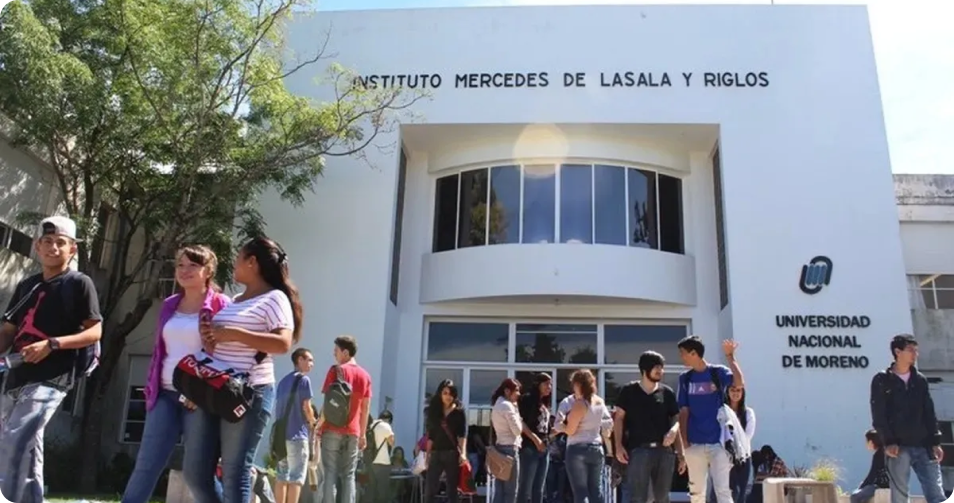

Universidad Nacional de Moreno (UNM)
Fundada en 1989, se encuentra en San Justo y es una de las principales universidades del oeste bonaerense. Cuenta con un campus de 40 hectáreas.
Carreras:
La UNM se orienta hacia el desarrollo social y económico de la región, priorizando carreras en áreas estratégicas como biotecnología, comunicación y tecnología:
Ciencias y Tecnología:
- Ingeniería Industrial
- Licenciatura en Biotecnología
Comunicación y Ciencias Sociales:
- Licenciatura en Comunicación Social
- Licenciatura en Trabajo Social
Economía y Gestión:
- Contador Público
- Licenciatura en Administración
Modalidades Disponibles y Datos de Contacto
Modalidades de Estudio:
- Presencial, con algunas opciones híbridas en cursos específicos
Contacto:
- Página web: www.unm.edu.ar
- Dirección: Av. Bartolomé Mitre 1891, Moreno, Buenos Aires
- Teléfono: (011) 0237-466-7186